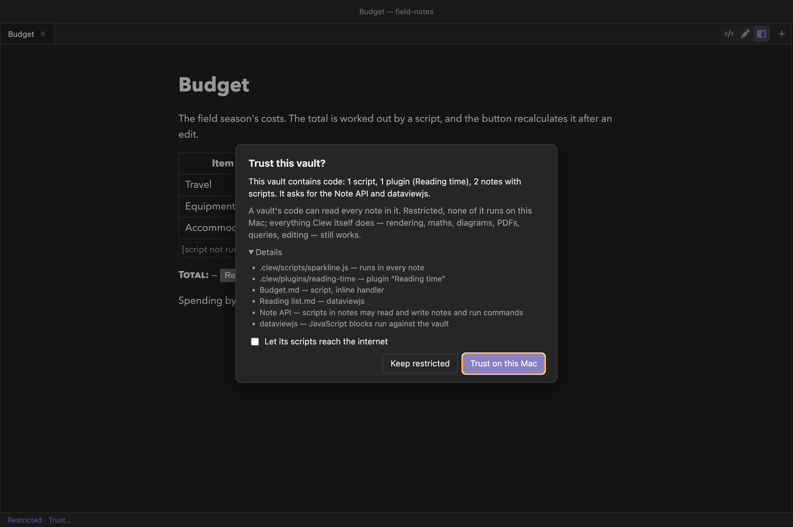
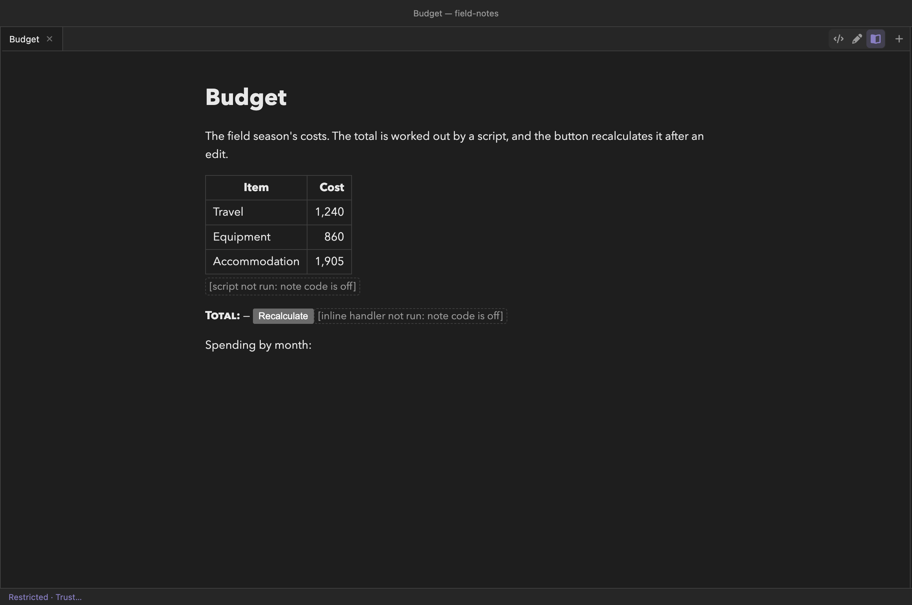

The vault
Trusting a vault
A vault can carry code: scripts that run in every note, plugins of its own, notes that compute. Opening a vault someone sent you should not run any of it. So Clew asks — once for each vault, on each device — and until you say yes the vault opens restricted: everything Clew itself does works, and none of the vault's own code runs.
Math.… and
calc(…), Mathematica, the Load … and
Extension … header keys), and a banner at the foot of the
window offers Trust this vault. A vault's scripts in
.clew/scripts/ and its notes' own scripts and handlers run
regardless; its plugins, the Note API and dataviewjs are
switched on by keys stored in the vault, so a vault can arrive
with them already on; and nothing limits the network. In 0.12.0, read
a vault you were sent before you open it.
What counts as a vault's code
A vault's code can read every note in it, and some of it can do anything a program on your computer can. It comes in several kinds:
- Vault scripts — the
.jsfiles in.clew/scripts/, loaded into every rendered note (see Vault plugins). - Its own plugins — those in
.clew/plugins/, as opposed to the ones you installed globally (below). - Scripts in its notes —
<script>elements andon…=handlers such asonclick=. - Code a note makes the engine run — script and
function blocks,
Math.…andcalc(…)in prose,math.…(…)expressions,:::Mathematicablocks, and the header keysLoad javascript,Load extensions,Load directives,Load environmentsandExtension …. This code runs in the engine's own process, with the same access to your files as any program you run. ```dataviewjsblocks — JavaScript run against the vault (Queries).- The Note API, which lets a note's scripts read and write notes and run commands.
- Scripts in the vault's own pages — an HTML page
or an SVG shown in a frame, a header banner, an
@revealdeck.
Apps in notes are not on the list. An app runs apart from Clew and from the vault, on an origin of its own, and asks for itself what it may do — so it works in a restricted vault too, behind a question of its own, and a vault whose only code is apps never asks to be trusted.
The prompt


The first time a vault with code is opened on a device, Clew asks
Trust this vault? The window draws the question
itself, never inside a note, where a note could imitate it. It counts
what the vault contains — scripts, its own plugins, notes with scripts —
and names what it asks for: the Note API, dataviewjs, any of
your global plugins it wants. Details lists each item,
note by note. The count is a reading of the text, not a verdict: a
function() block or Math.… in prose is not
counted, but it is still refused when the note renders, and the
indicator names it.
The question, not Trust, has the keyboard focus, so a key you were typing as it appeared answers nothing: choose with a click, or Tab to a button and press Enter.
- Keep restricted
- Records the answer and changes nothing else: the vault was already restricted, so nothing reloads. The status bar's indicator stays, and offers the question again whenever you want it.
- Trust on this Mac
- (Trust on this computer on Windows and Linux, Trust
on this iPad on an iPad.) Turns on the vault's
scripts, its own plugins, and what it asks for — the Note API,
dataviewjs, the global plugins it names — and the network only if you ticked Let its scripts reach the internet, which appears only when the vault asks for it. The window then reloads, so that the code runs from the start; first it asks the usual questions about unsaved office documents, and Cancel there leaves everything as it was. - Esc, or a click outside
- Puts the question away for now. The vault stays restricted and undecided, the indicator offers the question, and the next opening asks again.
A vault with no code never asks. It opens restricted, which costs it nothing — there is nothing to run — and if code is added to it later, the next opening asks.
What a restricted vault still does
Everything Clew itself does. Notes render — maths,
mermaid, TikZ, MetaPost and LaTeX figures, callouts, citations,
cross-references — and maps, PDFs, drawings, office documents, canvases
and embeds all work. So do ```query, ```tasks
and ```kanban fences and Dataview queries, editable cells
and kanban drags included, because Clew runs those itself rather than
running the note. Editing in every mode, search, the graph, backlinks,
file operations and the shell panel are unaffected, and
your own global plugins run where you enabled
them.


None of the vault's own code. Its scripts are not
loaded and its own plugins do not run. What a note asked for is refused
by name, where it stands, in a dashed placeholder —
[script not run: note code is off], [inline handler not
run: note code is off], [Load javascript not run: note code is
off] — so you can see what the note would have done. A
dataviewjs block shows [dataviewjs not run: note code is
off] above its source; a call to the Note API is refused; a page of
the vault's own, shown in a frame, draws but does not run its scripts;
and the network is closed to all of it.
Nor are links that leave the vault. A symbolic link inside a restricted vault that points outside it — to a file or to a folder — is not followed: what it points to does not appear in the explorer, cannot be opened or embedded, is not indexed or searched, and is left out of a website export; an embed of it says in place that this link leaves the vault, and a vault you have not trusted is not followed out of itself. Trust the vault to follow them. Links that stay inside the vault work as always.
While a restricted vault has code, the status bar's left end reads Restricted · Trust…. Its tooltip lists what was not run; clicking it asks the question again.
A restricted vault's exports behave the same way. A note's HTML, LaTeX
and PDF exports refuse the same code, and read only your global
~/.jmarkdown configuration, never a .jmarkdown/
folder inside the vault (see
Exports use your jmarkdown
configuration). A website export
leaves out the vault's scripts and its own plugins, and refuses
dataviewjs by name; your enabled global plugins still go in.
What this device keeps for each vault
Trust is kept by Clew on this device, never in the vault, so a vault cannot arrive trusting itself. It belongs to the folder rather than its path: a different vault unpacked where a trusted one used to be is asked about afresh, and so is a vault you move or rename. Settings → This vault shows the device's answer first:
- Trusted on this device: this vault may run its code
- The trust itself. Changing it reloads the window.
- Vault scripts: run .clew/scripts in every note
- On by default in a trusted vault. Changing it reloads the window.
- Note API: scripts in rendered notes may control Clew
- See The Note API. Applies at once.
- Run dataviewjs blocks in this vault
- See Queries. Applies at once.
- Network: let this vault's scripts reach other hosts
- See below. Changing it reloads the window.
The plugin checkboxes follow further down the page (below). While the vault is restricted, every one of these switches is off and greyed. A switch the vault asks for says so in its tooltip: This vault asks for it.
What a vault asks for lives in its own
.clew/vault-settings.json, as the keys
plugins, noteApi, dataviewJs and
network. They are a request — what the
prompt shows — and never a grant. Turning one of these switches on or
off writes the key back as the vault's request, so a vault you share
goes on asking the same of whoever opens it next. There is no key for
scripts: a vault asks for those by having them.
Trusting from Settings rather than from the prompt has two consequences worth knowing. A vault that was never asked about is given everything it requests, the network included if it asks — there is no box to untick. A vault you kept restricted is trusted with what was recorded then: its scripts, and nothing else, so turn on the rest by hand — or click the indicator, whose prompt grants the request.
Trusted vaults
Settings → Trusted vaults lists every vault this device has decided about, newest first: its folder's name (with (open) when a window has it, — not on disk when it is gone), whether it is Trusted, Restricted or Not decided, and two buttons. Revoke makes a trusted vault restricted and keeps its switches for a later Trust, which restores them. Forget removes the record, so the next opening is a first opening and asks again. A vault open in a window reloads, after its usual questions about unsaved work.
Plugins
Installing a plugin is global; enabling it is per vault, on this device. A vault's own plugins run only while the vault is trusted, and only then does one shadow a global plugin of the same id — a restricted vault cannot replace your plugin with its own by giving it the same name. Your global plugins are your code: they run in any vault you enable them for, trusted or not, and enabling one for a vault that has not been asked about does not answer the question. See Vault plugins.
The network
With the network off, a note's scripts cannot fetch from or post to
another host: no fetch, no WebSocket, no form sent off the
machine, no worker loaded from elsewhere. Images, map tiles, media,
embedded pages, styles and fonts still load. That stops the easy way of
sending your notes somewhere — a script you trusted posting them to a
server.
It is not a wall, and two limits are worth saying plainly. A script can
still carry data out in the address of an image or a frame it loads;
closing that would break remote images and maps. And the switch covers
scripts in the rendered note only: dataviewjs blocks and
plugins' engine surfaces run in Clew's render process, with a network of
their own that no switch reaches — for those, trust itself is the only
gate. A vault trusted with the network on runs with no restriction at
all.
The network starts off for a vault you trust through the prompt unless you tick the box, and is on for the vaults this device already knew (below). A restricted vault has none.
Vaults you already had
The vaults this device already knew when Clew first asked about trust
— open, on the recent list, or opened last — stayed trusted, each
keeping the plugins, Note API and dataviewjs it had
switched on, with the network on: nothing changed for them. A one-time
notice says so (Clew now asks before running a vault's code. The
vaults you already used are trusted on this Mac), names any it
left restricted, and offers Trusted vaults… to review
them. The demo vault is trusted with what it asks for — the Note API,
dataviewjs and its three plugins — and the network off. A
vault you create from the welcome screen is trusted.
Reference
| Item | Detail |
|---|---|
| The question | Trust this vault? — on the first opening of a vault with code, per device: Keep restricted or Trust on this Mac (which reloads) |
| Restricted | Everything Clew does works; none of the vault's code runs; refusals marked in place, [… not run: note code is off]; links that leave the vault are not followed |
| Indicator | Restricted · Trust… at the status bar's left; its tooltip lists what was not run; click to be asked |
| Settings → This vault | Trusted on this device; Vault scripts; Note API; Run dataviewjs blocks; Network; plugin checkboxes |
| Settings → Trusted vaults | Every vault decided about: Revoke / Trust, Forget |
| Where it is kept | vault-trust.json in Clew's own data on this device — never in the vault |
| A vault's request | plugins, noteApi, dataviewJs, network in .clew/vault-settings.json — shown, never granted |
| Global plugins | Yours: run wherever you enable them, trusted or not |
| Network off | No fetch, socket, form or worker to another host; images, maps, media and frames still load; data in an image's or frame's address is not stopped |